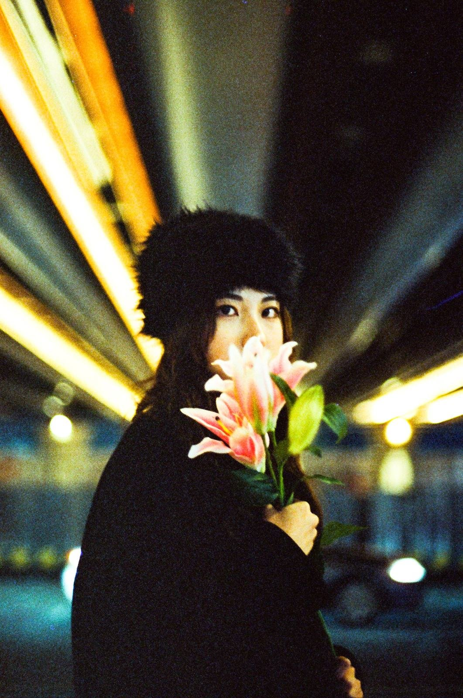
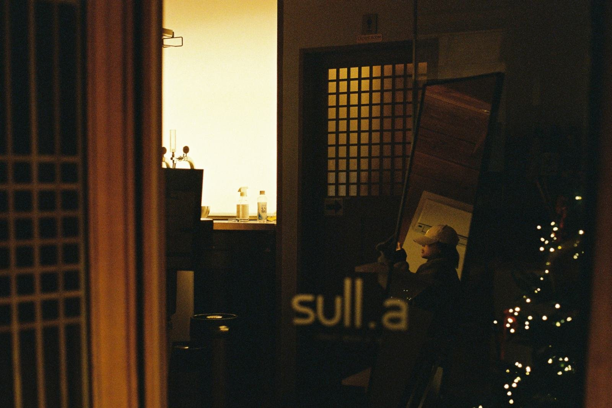
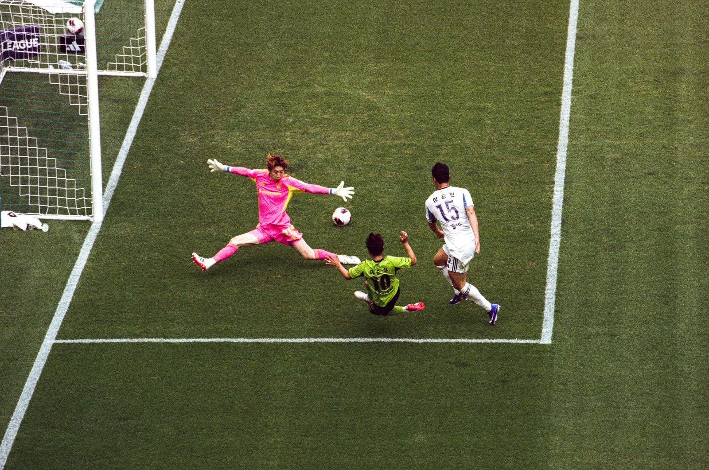
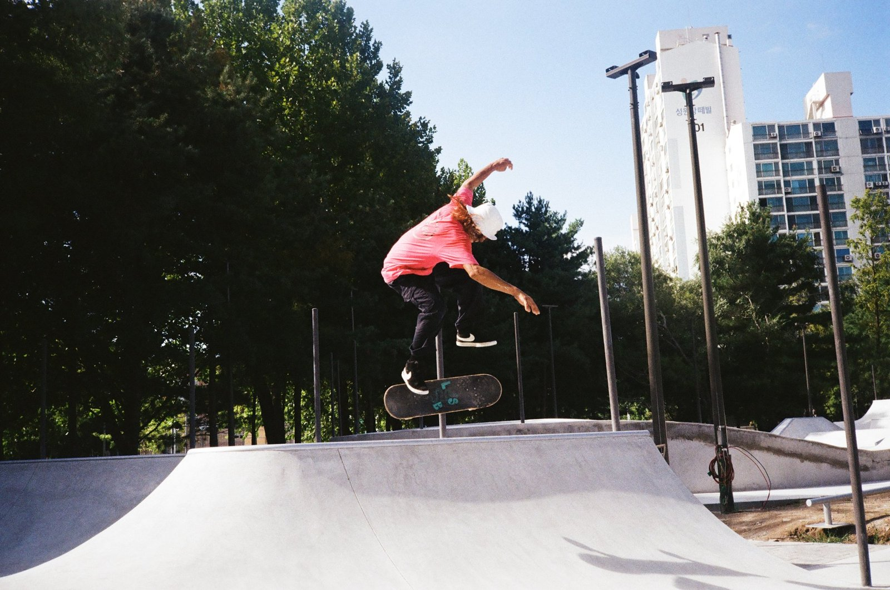
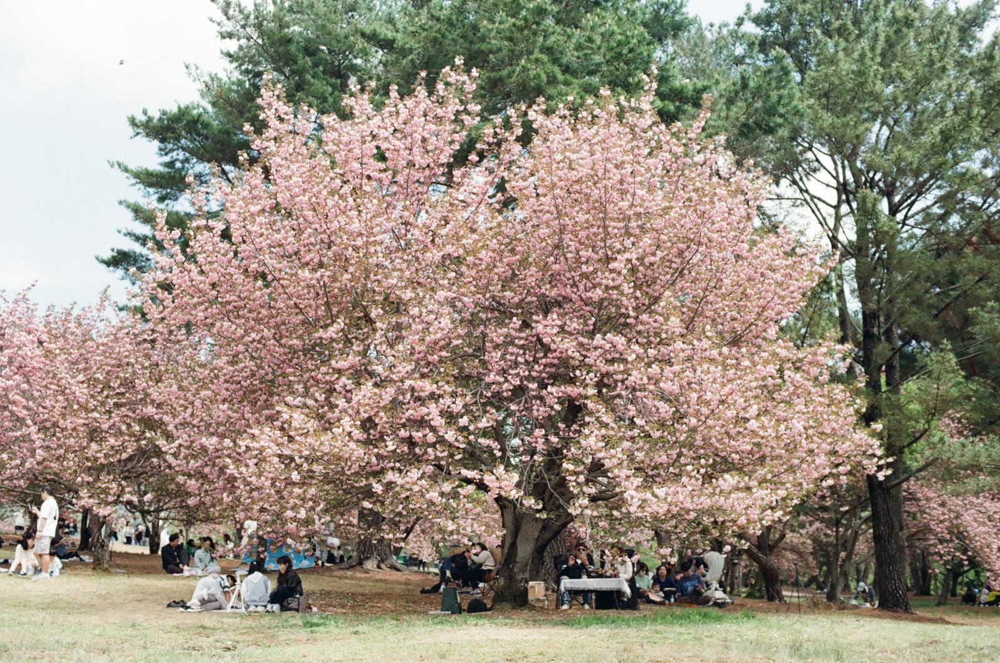
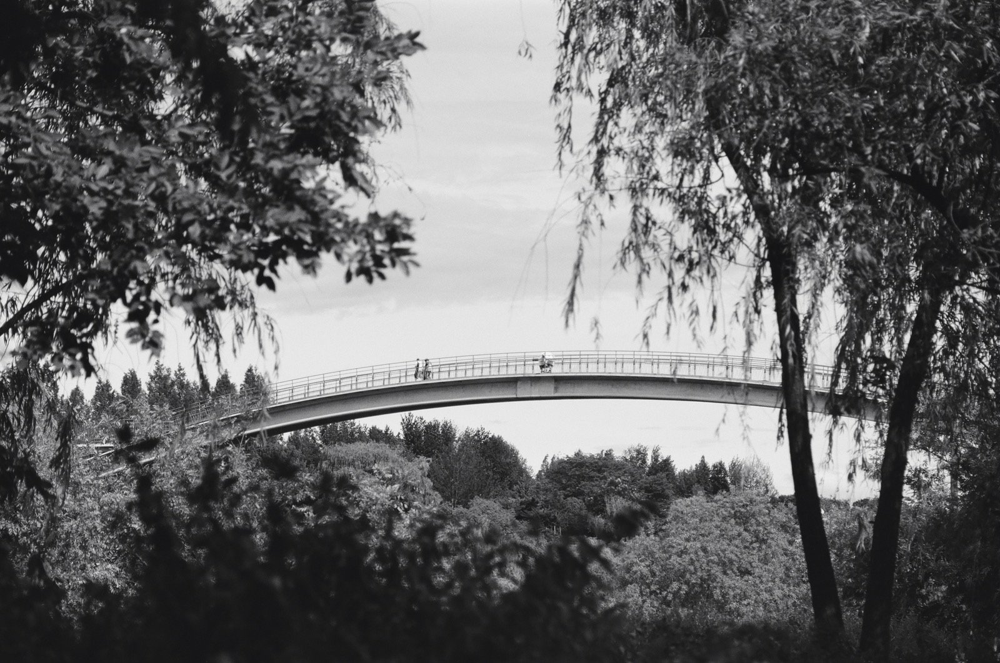
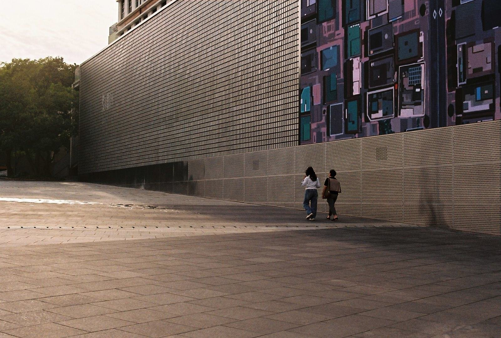
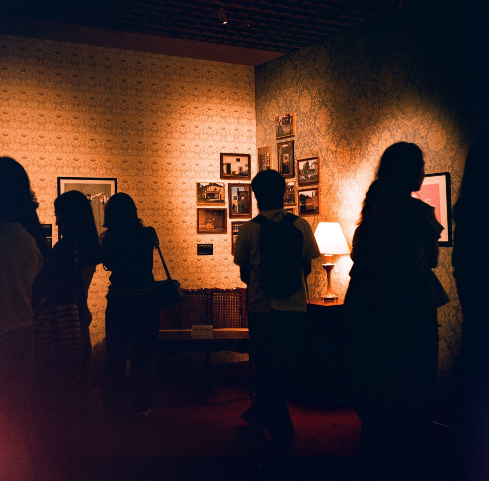
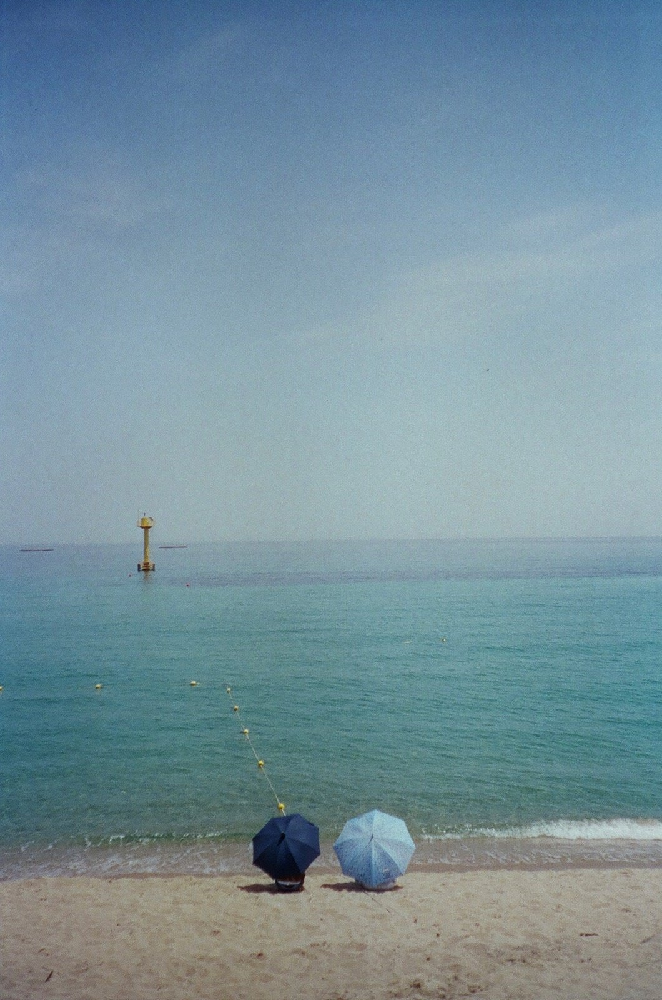
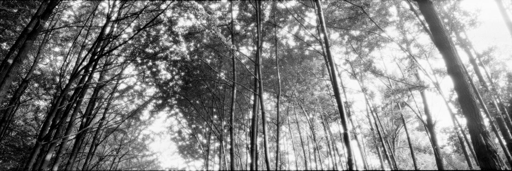

오피트 웹사이트를 연 지 다섯 달쯤 지났다. 그사이 독자들이 올린 필름 사진이 5천 컷을 넘었다. 이번 글에서는 그중 열두 장을 꺼내 본다.
먼저 고른 방식을 밝혀 둔다. 많이 본 순서나 반응이 좋았던 순서로 고르지 않았다. 업로드된 사진 가운데 서로 다른 작가 열두 명에게서 한 장씩 골랐고, 빛과 계절과 공간을 실마리로 순서를 정했다. 열두 장이 5천 컷 전체를 대표하지는 않는다.
사진 아래에 적은 필름과 카메라는 투고할 때 작가가 직접 입력한 값이다. 투고된 사진은 필름 카탈로그의 해당 필름 페이지에도 함께 걸리기 때문에, 이 값이 다른 독자에게는 필름을 고르는 자료가 된다. 사진 설명은 편집부가 화면에 보이는 것만 적었다. 작가 이름을 누르면 그 작가가 올린 사진을 모아 볼 수 있다.
밤과 불빛
밤의 사진 세 장으로 시작한다. 눈 오는 거리, 길게 흐르는 조명, 유리 너머의 실내등이 차례로 나온다.
맨 위는 @seongbokchoi 의 사진이다. 눈 내리는 밤, 우산을 쓴 사람이 상점 앞을 걸어간다. 흑백 필름이라 상점의 불빛이 색 없이 밝기로만 남았다. 작가는 이 사진에 「천둥번개를 동반한 폭설이 오던 날.」이라고 적었다.

검은 털모자를 쓴 사람이 분홍 백합을 얼굴 가까이 들고 이쪽을 본다. 뒤로는 조명이 길게 흐른다. 시네스틸 800T 는 텅스텐 조명에 맞춰 색을 잡은 필름이라, 이처럼 밤의 인공 조명 아래에서 많이 쓴다.

유리 너머 실내에 따뜻한 빛이 돌고, 그 안에 한 사람이 앉아 있다. 미놀타 X-700 에 코닥 울트라맥스 400 을 넣어 찍었다.
움직이는 순간
다음 두 장은 몸이 움직이는 순간이다. 축구 경기장과 스케이트파크다.

골키퍼가 몸을 날리고, 그 앞에서 두 선수가 공을 향해 다리를 뻗는다. 위에서 내려다본 자리라 골문 앞의 흰 선이 화면을 가른다. 영화 촬영용 필름인 코닥 Vision3 250D 의 AHU 판을 캐논 EOS 1 에 넣었다.

스케이트보드와 함께 사람이 공중에 떠 있다. 작가가 붙인 캡션에 따르면 노해근린공원 스케이트파크에서 테스트 라이딩을 하는 장면이다. 미놀타 하이매틱 AF2 에 후지필름 200 을 넣었다.
꽃나무와 다리, 큰 벽
이번에는 풍경 속의 사람이다. 이 세 장에서는 사람이 풍경에 비해 작게 들어와 있다.

분홍 꽃이 핀 나무 아래, 공원에 사람들이 모여 있다. 코닥 골드 200 으로 찍었고 카메라는 적혀 있지 않다.

나뭇가지 사이로 다리와 작은 사람들이 보인다. 흑백 필름 후지필름 네오판 아크로스 II 100 을 니콘 FM2 에 넣었다.

커다란 건물 벽을 따라 두 사람이 걷는다. 코닥 컬러플러스 200 을 니콘 F3 HP 에 넣어 찍었다.
벽 앞에서, 바다 앞에서
다음 두 장은 무언가를 마주한 자리다. 하나는 전시장의 벽이고, 하나는 바다다.

전시장 벽을 바라보는 사람들이 실루엣으로 남았다. 야시카 635 는 렌즈가 위아래로 두 개 달린 이안 반사식 카메라다.

푸른 바다 앞에 파라솔 두 개가 서 있다. 칸디도 800 에 코시나 CX-2 를 썼다.
가로로 긴 두 장
마지막은 6x17 판형으로 찍은 두 장이다. 두 작가 모두 카메라를 후지 G617 이라고 적었다. 120 필름 한 롤에 네 컷만 들어가고, 한 컷의 가로가 세로의 세 배쯤 된다.

위로 뻗은 나무들 사이, 나뭇잎 틈으로 빛이 든다. 포마 오르토 400 은 붉은빛에 반응하지 않는 정색성 흑백 필름이다.
여러 색의 컨테이너가 층층이 놓여 있다. 작가가 붙인 캡션은 「오쇠동」 한 단어다. 오피트가 앞서 다룬 OptiColour 200 은 120 판이 먼저 나왔다.
맺으며
열두 장을 나란히 놓고 보면 필름도 카메라도 판형도 제각각이다. 같은 필름은 한 번도 겹치지 않고, 두 번 나오는 카메라는 6x17 두 장을 찍은 후지 G617 하나뿐이다. 영화 촬영용 필름을 넣은 1980년대 자동초점 카메라도 있고, 카메라를 적지 않은 사진도 있다. 그렇다면 캡션의 필름 이름은 무엇을 알려 줄까? 장면을 설명해 주지는 않지만, 그 장면을 어떤 도구로 담았는지는 알려 준다. 다음에 필름을 고를 때 이 열두 장의 캡션을 한 번 들여다봐도 좋겠다.
한 컷씩 나눠 주신 열두 분께 감사드린다. 이번에 싣지 못한 사진을 올려 주신 분들께도 같은 마음이다. 다음 사진도 기다린다. 투고는 홈 화면의 「내 사진 올리기」에서 할 수 있다.